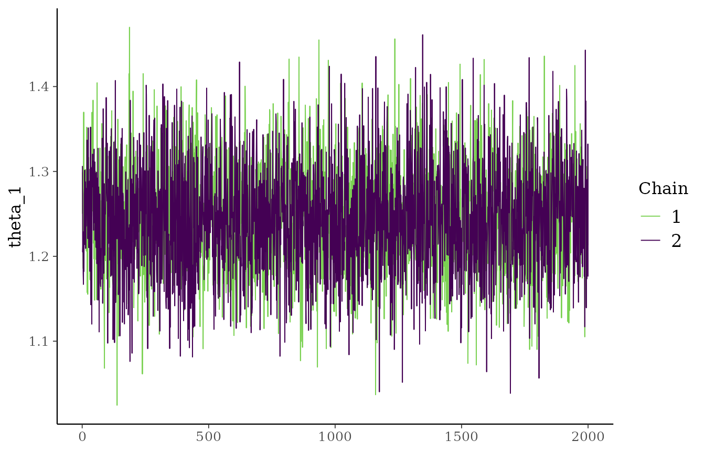
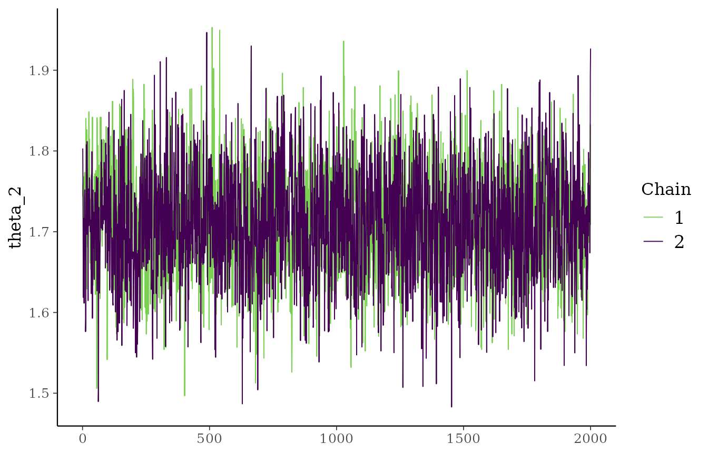
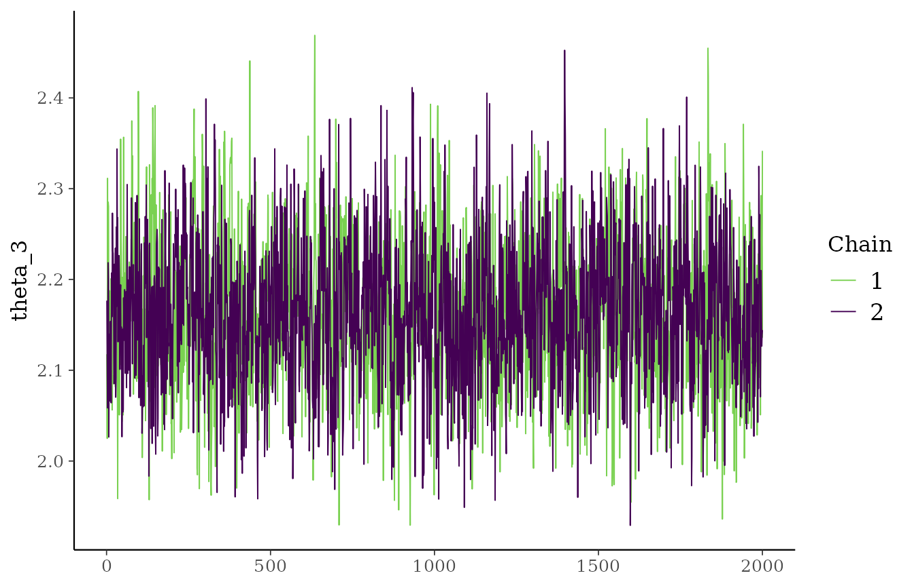
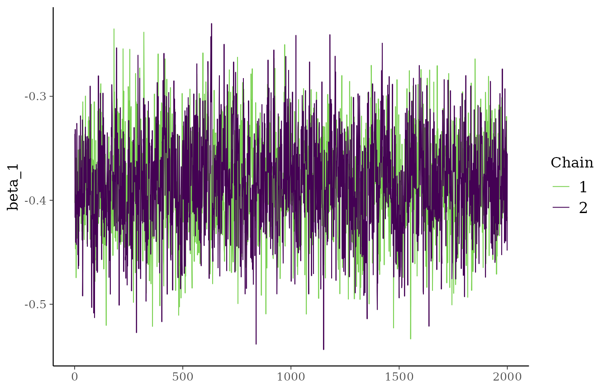
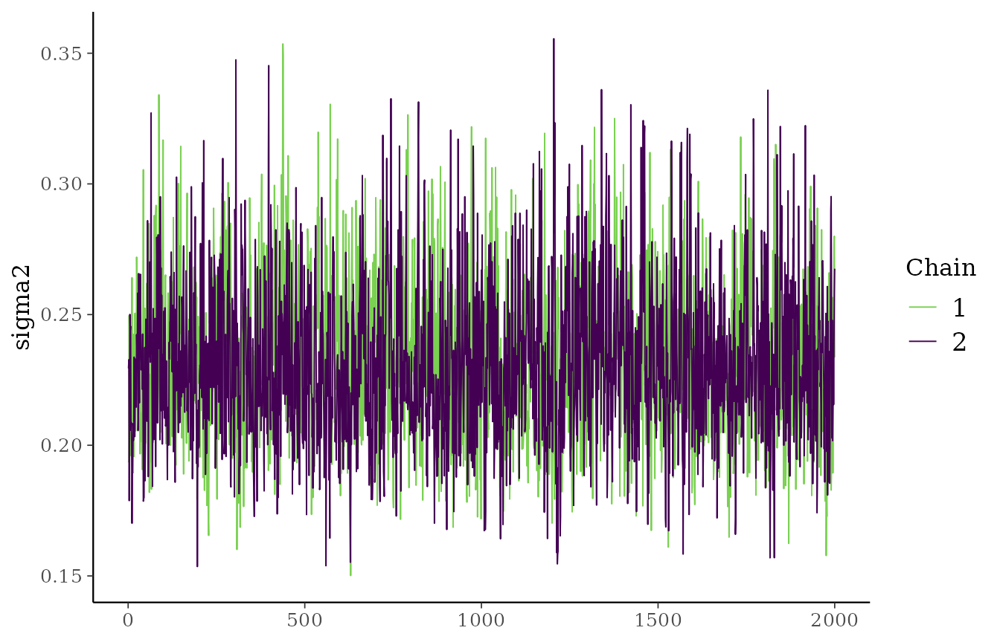
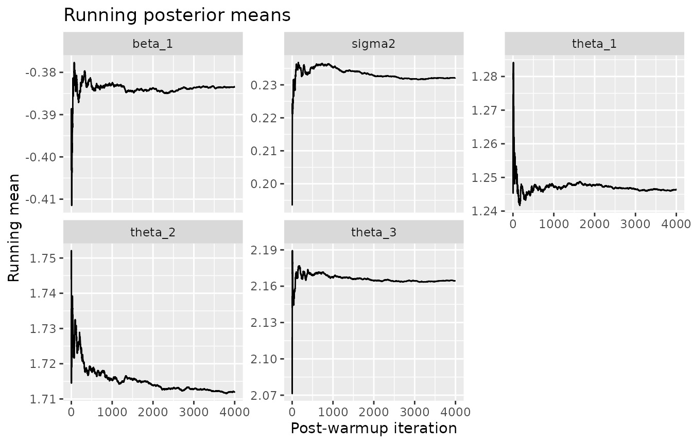

Convergence and Diagnostics
Source:vignettes/convergence-and-diagnostics.Rmd
convergence-and-diagnostics.RmdOverview
This vignette shows a simple workflow for checking whether the sampler appears stable in practice. The package now supports multiple chains, including R-level parallel execution, so the examples below combine:
- traceplots,
- running means,
- effective sample size approximations,
- repeated fits with different seeds.
Simulate data
library(exnexSurv)
library(survival)
library(ggplot2)
library(bayesplot)
simulate_surv_data <- function(
theta,
sigma2,
beta = NULL,
n_per_group = 60,
censor_min = 4,
censor_max = 12,
seed = NULL
) {
if (!is.null(seed)) {
set.seed(seed)
}
groups <- rep(seq_along(theta), each = n_per_group)
age_std <- rnorm(length(groups), mean = 0, sd = 1)
mean_log_time <- rep(theta, each = n_per_group)
if (!is.null(beta)) {
mean_log_time <- mean_log_time + beta * age_std
}
log_time <- rnorm(length(groups), mean = mean_log_time, sd = sqrt(sigma2))
true_time <- exp(log_time)
censor_time <- runif(length(groups), min = censor_min, max = censor_max)
data.frame(
time = pmin(true_time, censor_time),
event = as.integer(true_time <= censor_time),
group = factor(groups),
age_std = age_std
)
}
sim_data <- simulate_surv_data(
theta = c(1.2, 1.7, 2.1),
sigma2 = 0.20,
beta = -0.35,
n_per_group = 60,
seed = 6841
)
mean(sim_data$event)
#> [1] 0.6777778Fit multiple chains
fit <- exnex_surv(
Surv(time, event) ~ group + age_std,
data = sim_data,
iter = 3000,
warmup = 1000,
chains = 2,
parallel_chains = 2,
seed = 6841
)
print(fit, show_trace = FALSE)
#> <exnex_surv model>
#> Draws: 4000 total post-warmup samples
#> 2000 post-warmup samples per chain
#> Groups: 3 | Covariates: 1
#> MCMC: iter = 3000 , warmup = 1000 , chains = 2
#>
#> parameter mean sd q05 q50 q95
#> theta_1 1.2463566 0.06462694 1.1403574 1.2466079 1.3532442
#> theta_2 1.7120960 0.06780666 1.6006020 1.7114203 1.8234427
#> theta_3 2.1643972 0.07989574 2.0348217 2.1631064 2.2992832
#> beta_1 -0.3834375 0.04700082 -0.4604095 -0.3846512 -0.3059669
#> sigma2 0.2321148 0.03015053 0.1875849 0.2298443 0.2862142This fit stores all post-warmup draws in one table. With
chains = 2, each chain contributes the same number of
post-warmup iterations, so chain-aware diagnostics can reconstruct the
original chain layout from the total row count.
Traceplots
plot(fit, ask = FALSE)




A healthy traceplot usually shows noisy fluctuations around a roughly stable level rather than long drifts or very sticky behavior.
Running means
running_mean_df <- do.call(
rbind,
lapply(colnames(fit$draws), function(param) {
values <- fit$draws[[param]]
data.frame(
iteration = seq_along(values),
running_mean = cumsum(values) / seq_along(values),
parameter = param
)
})
)
ggplot(running_mean_df, aes(iteration, running_mean)) +
geom_line() +
facet_wrap(~ parameter, scales = "free_y") +
labs(
title = "Running posterior means",
x = "Post-warmup iteration",
y = "Running mean"
)
If the running means stabilize, that is usually a good sign that Monte Carlo error is shrinking.
Simple numerical diagnostics
ess_simple <- function(x, max_lag = 100) {
acf_vals <- stats::acf(
x,
lag.max = min(max_lag, length(x) - 1),
plot = FALSE
)$acf[-1]
positive_acf <- acf_vals[acf_vals > 0]
if (length(positive_acf) == 0) {
return(length(x))
}
tau <- 1 + 2 * sum(positive_acf)
min(length(x), length(x) / tau)
}
diagnostics <- data.frame(
parameter = colnames(fit$draws),
mean = colMeans(fit$draws),
sd = apply(fit$draws, 2, sd),
lag1_acf = apply(fit$draws, 2, function(x) stats::acf(x, lag.max = 1, plot = FALSE)$acf[2]),
ess = apply(fit$draws, 2, ess_simple),
mcse = mapply(function(s, e) s / sqrt(e), apply(fit$draws, 2, sd), apply(fit$draws, 2, ess_simple)),
row.names = NULL
)
diagnostics
#> parameter mean sd lag1_acf ess mcse
#> 1 theta_1 1.2463566 0.06462694 0.07715308 1670.518 0.0015812045
#> 2 theta_2 1.7120960 0.06780666 0.17671633 1401.528 0.0018112211
#> 3 theta_3 2.1643972 0.07989574 0.36812889 1153.227 0.0023526984
#> 4 beta_1 -0.3834375 0.04700082 0.33138567 1187.507 0.0013639152
#> 5 sigma2 0.2321148 0.03015053 0.33885848 1020.186 0.0009439638Lower autocorrelation and higher effective sample size are usually preferable.
Repeat the fit with different seeds
fit_seeds <- lapply(c(6841, 7313, 8129), function(seed) {
exnex_surv(
Surv(time, event) ~ group + age_std,
data = sim_data,
iter = 3000,
warmup = 1000,
chains = 2,
parallel_chains = 2,
seed = seed
)
})
posterior_means_by_run <- do.call(
rbind,
lapply(fit_seeds, function(x) {
s <- summary(x)
stats::setNames(s$mean, s$parameter)
})
)
posterior_means_by_run
#> theta_1 theta_2 theta_3 beta_1 sigma2
#> [1,] 1.246357 1.712096 2.164397 -0.3834375 0.2321148
#> [2,] 1.243725 1.711442 2.161590 -0.3829936 0.2310015
#> [3,] 1.245225 1.710733 2.162179 -0.3825527 0.2325135
apply(posterior_means_by_run, 2, sd)
#> theta_1 theta_2 theta_3 beta_1 sigma2
#> 0.0013202950 0.0006818794 0.0014800891 0.0004424412 0.0007836361If posterior means are very similar across runs, that supports stability.